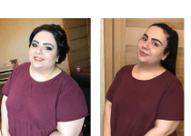
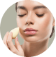
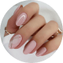
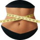
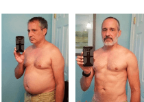

مر شهرين منذ اللحظة التي فقدت فيها وزني بشكل ملحوظ وطبيعي , و الناس يسألونني عن الطريقة التي اتبعتها الكثير من الأسئلة.
وجدت مؤخرًا أكثر من ألف رسالة حول كيفية التخلص من الوزن الزائد. يسعدني أن أكتب إلى كل شخص شخصيًا ، لكن لسوء الحظ ، هذا ببساطة مستحيل - فهناك الكثير منكم
لكن هذا لا يعني أنه لا يمكنكم إرسال المزيد من الأسئلة لي! انها فقط تجعل الامر أسهل بالنسبة لي ولكم.
استغرق تحولي شهرين فقط دون اتباع نظام غذائي وممارسة الرياضة! النتيجة لا تصدق ، أليس كذلك؟

لم أكن أبدًا في حالة جيدة ولا يمكنني التباهي بعملية التمثيل الغذائي السريع. لكن كل شيء يناسبني بشكل أو بآخر لفترة معينة. في مرحلة ما ، لاحظت أن اوزاني على الميزان تتزايد بسرعة وكان من المستحيل إيقافها ...
كان رعبي عندما لم استطع ربط أي من البناطيل . عندما رأيت نفسي في المرآة ، لم أستطع كبح دموعي. زاد حجم الوركين والفخذين والأرداف أكثر فأكثر!
قررت أن الوقت قد حان لمحاولة استعادة لياقتي مرة أخرى.
توقفت عن تناول الأطعمة الدسمة والمقلية. لقد تخليت عن وجبة العشاء و أكثر من ذلك - بدأت في الذهاب إلى صالة الألعاب الرياضية مرتين في اليوم! لكن بعد شهرين - صدمة ، هستيريا! وزني حوالي 100 كجم!
بالنسبة لي كانت نهاية العالم. الكثير من الجهد والألم وسوء التغذية وكل ذلك سدى. جاء نظام غذائي أكثر صرامة للإنقاذ: لا يمكنني تناول الخبز واللحوم والحبوب. وفي النهاية ، لم يتبق في نظامي الغذائي سوى الخضروات والفواكه وأوراق الخس مع كوب من الماء. وبالطبع أنواع الشاي الممتازة ، والهلام ، وكريمات التخسيس.
لقد أنفقت أكثر من 5000 دولار على كل هذا. لكن لم يساعدني شيء!
بعد مرور بعض الوقت ، عاد الوزن مرة أخرى. وساءت الصحة أكثر : فشل هرموني ، التهاب معوي واكتئاب.
أنا أفهم تمامًا الفتيات اللواتي يعانين من الوزن الزائد ولا يعرفن ماذا يفعلن بأنفسهن .
اتباع نظام غذائي والذهاب إلى صالة الألعاب الرياضية لم يساعدا. لقد كانت كارثة!
من الصعب ممارسة الرياضة باستمرار ، خاصة عندما تستمر النتيجة ما دمت أتدرب. بمجرد أن يفوتني 1-2 تمرين ، أكسب على الفور +3 كجم.
ماذا علي أن أفعل؟ كيف لي ان اصبح نحيفة؟
بعد النظام الغذائي ومنتجات إنقاص الوزن الاصطناعية وساعات لا حصر لها في صالة الألعاب الرياضية مع تدريب شخصي باهظ الثمن ، كنت على وشك الاستسلام. لكني كنت محظوظة.
قبل شهرين عثرت مصادفة على مقال حول Myralose وأردت تجربته. خاصة وأن التعليقات كانت جيدة للغاية.
سميرة
في الرابعة والعشرين من عمري ، كان وزني 108 كجم. مشاكل صحية وألف مشكلة أخرى - كانت تلك حياتي. في مرحلة ما ، سئمت كل هذا ، اشتركت في صالة ألعاب رياضية ، ولتحقيق تأثير أكبر بدأت في أخذ Myralose. بدأت نقودي الزائدة في التلاشي تدريجياً. في الشهر الأول خسرت 7 كيلوغرامات ، وفي الشهر الثاني - 6 ، وفي الثالث - 12 كيلوغراماً دفعة واحدة! الآن عدت إلى وزني الطبيعي ويمكنك رؤية النتيجة في صورتي!
فاطمة
اكتسبت الكثير من الوزن بعد الولادة. لم يساعد شيء: لا حمية ، لا إضراب عن الطعام. يا لها من نعمة نصحني بها أحد الأصدقاء بتجربة Myralose - وقد تمكنت بالفعل من إنقاص وزني! وزني الآن هو نفسه تمامًا كما كان قبل الولادة. بمساعدة Myralose ، تمكنت من العودة بسرعة إلى وزني المثالي .

أنيت
عمري 45 سنة وأنا بعيدة كل البعد عن أسلوب حياة صحي. الجلوس المستمر ، وركوب السيارة الطويل ، والأطعمة الدهنية كان لها أثرها. بسبب كل هذا ، اكتسبت وزني وفقدت جاذبيتي. قررت محاربة هذه المشكلة وبدأت في أخذ Myralose. و النتيجة - لم أفقد فقط 15 كيلوغرامًا من الدهون الزائدة ، Myralose أيضًا بدوت أصغر بـ 15 عامًا!
فقد ملايين النساء في كل من أوروبا وأمريكا الوزن بسهولة وبسرعة بمساعدة Myralose.
وفقًا لبعض الدراسات ، كان 96.7٪ من 100٪ من المستخدمين قادرين على خسارة 11-15 كجم في 3 أسابيع فقط. تتخيل!
الإحصاء
%98
اعترفت 98٪ من الفتيات أنهن لم يغيرن نظامهن الغذائي ، لكنهن ما زلن يفقدن 2-5 كجم بفضل Myralose
%85
85٪ من النساء فقدن 10-20 كجم في شهر واحد مع نشاط بدني معتدل.
%99.3
أكد 99.3٪ من المستخدمين تحسنًا في الحالة المزاجية بعد أخذ Myralose
كيف يعمل Myralose ؟
Myralose هذه الحبوب طبيعية تقضي على تراكم الدهون في المناطق الصعبة في أقل وقت ممكن.
فقدان الوزن ليس بسبب الجفاف. على العكس من ذلك ، تفقد كتلة الدهون فقط. التأثير مرئي بالفعل بعد يومين من تناول هذه الحبوب الحلوة .
بالإضافة إلى إذابة الدهون ، فإن Myralose له تأثير إيجابي على الجسم كله.
- 
بشرة نظيفة.
-
شعر كثيف وقوي ينمو أسرع بثلاث مرات .
- 
أظافر قوية.
-
مزاج ممتاز.
-
الثقة بالنفس.
Myralose هو منتج فقدان الوزن الأقل تكلفة الذي رأيته في حياتي. أي أدوية صيدلانية تكلف مرتين أكثر من هذه الحبوب .
للمقارنة ، أريد أن أعرض عليكم استبيانًا اجتماعيًا لمجلة "the people " الأمريكية حول أكثر الوسائل فعالية وأمانًا لفقدان الوزن:
كما ترى ، فإن أكثر من 87٪ من النساء يثقن في Myralose ويعتبرونه الطريقة الأكثر فاعلية لفقدان الوزن.
أنا شخصياً أعتقد أن Myralose هو أفضل شيء حدث لي:
- 
جسم متناسق
-
صحة ممتازة
-
النجاح الوظيفي
-
مزيد من الاهتمام من الزوج
-
مع الاستخدام المنتظم ، يعمل هذا الدواء كوقاية من زيادة الوزن.
إذا كنت تريد أن تشعر بالنحافة والثقة والجاذبية مرة أخرى - فسوف يساعدك Myralose.
، سأترك للجميع رابط \ نموذج حيث يمكنك طلب دورة Myralose بتخفيض هائل !
أسرع ، هذه الدورة تُباع بسرعة كبيرة. آخر مرة لم يتبق سوى 10 عبوات.
تعليقات
نجاة الأعظم
لقد طلبت Myralose لنفسي منذ 3 أسابيع. على الرغم من عدم وجود خصم ، إلا أن هذه الحبوب الحلوة رخيصة ، لكن النتيجة مذهلة! لقد خسرت 15 كجم بدون نظام غذائي ، ولم أكن أعتقد حتى أن هذه المنتجات الطبيعية يمكن أن تكون فعالة للغاية.
سمراء السمعان
أشتري الكثير من الأشياء عبر الإنترنت ومن المدهش أنني لم أسمع أبدًا بـ Myralose. شكراً سناء مدكور ، يا لها من قصة رائعة! شكرًا لك!
لائقة المير
لقد بدأت للتو في إستخدام Myralose! لقد مر أسبوع فقط وأشعر بالفعل بأنني أكثر نشاطًا ومليئة بالطاقة.
قيس الحمد
أخبروني ، هل يمكن للرجال تناول هذه الحبوب الحلوة ؟ خلال الأشهر الستة الماضية ، كانت بطني تنمو بسرعة كبيرة.
حميدة سالم
أنا سعيد لأنك قرأت هذا المنشور. بالطبع ، يمكن للرجال أن يأخذوها. سأخبرك بسر ، زوجي يستخدم أيضًا Myralose ويشعر بالارتياح.
طاهر العودة
أبلغ من العمر 57 عامًا وأخذت Myralose منذ أسبوع الآن. خسرت 10 كجم. أشعر وكأنني أصغر بعشر سنوات. أنصح به الجميع.
